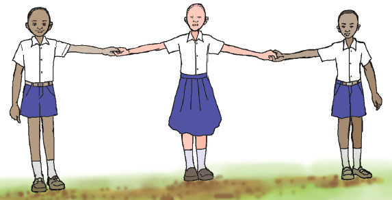
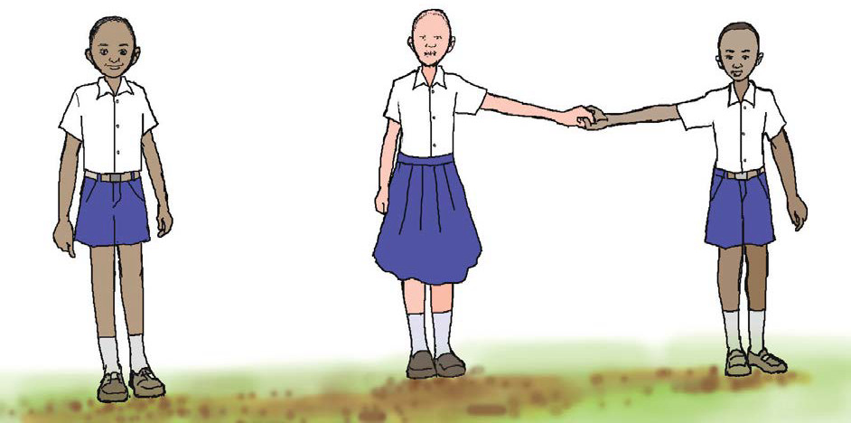

I have to leave the line. Goodbye. Look, now I am far
from you. The following picture shows I am far from
you.

I am one third of the three of us. What about you? We
are two-thirds of the three of us.
106
106 The picture shows three schoolchildren standing in a line and holding hands. I have to leave the line. Goodbye. Look, now I am far from you. The following picture shows I am far from you. The following picture shows one pupil standing apart while the other two schoolchildren stand together holding hands. I am one third of the three of us. What about you? We are two-thirds of the three of us.